Part 1: Meaningful Object Brainstorm
Object Elaboration Table
| Object Image (Click to enlarge) | Object Description | Object Meaning |
|---|---|---|
|
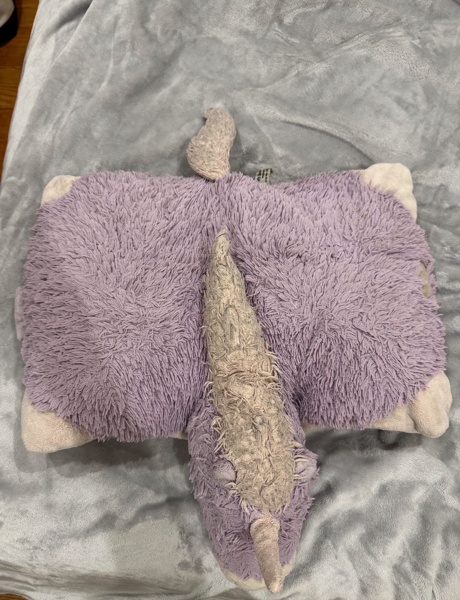 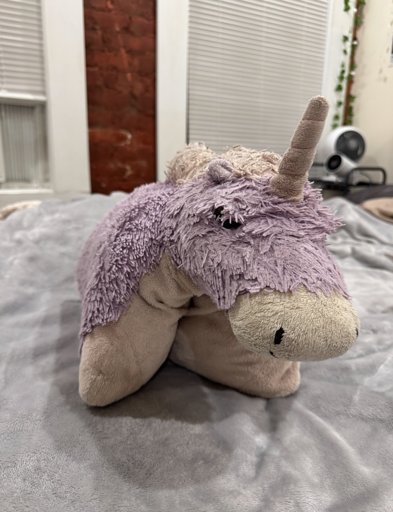 Pillow Pet |
|
|
|
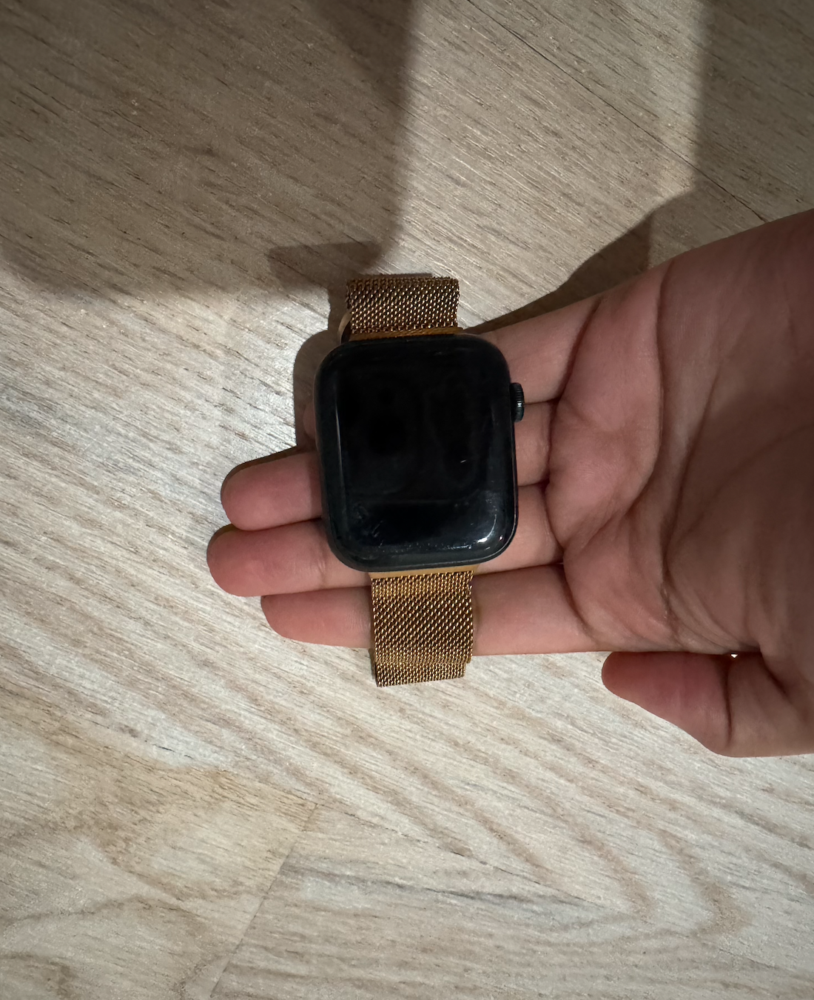 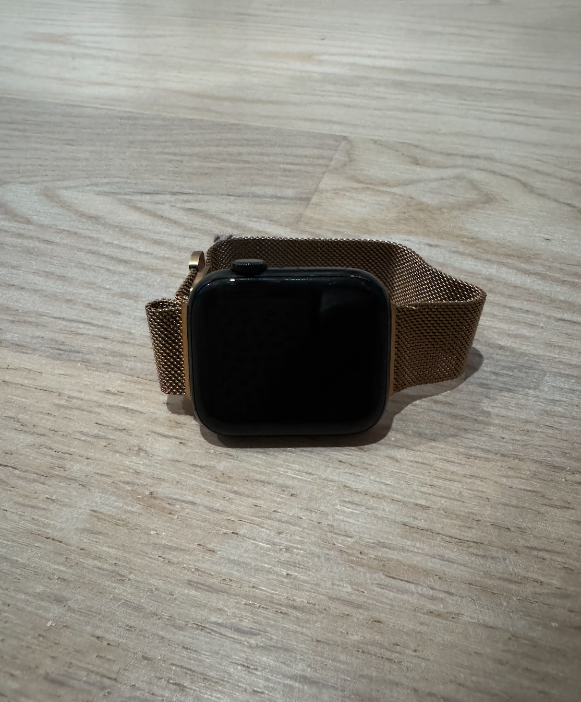 Apple Watch |
|
|
|
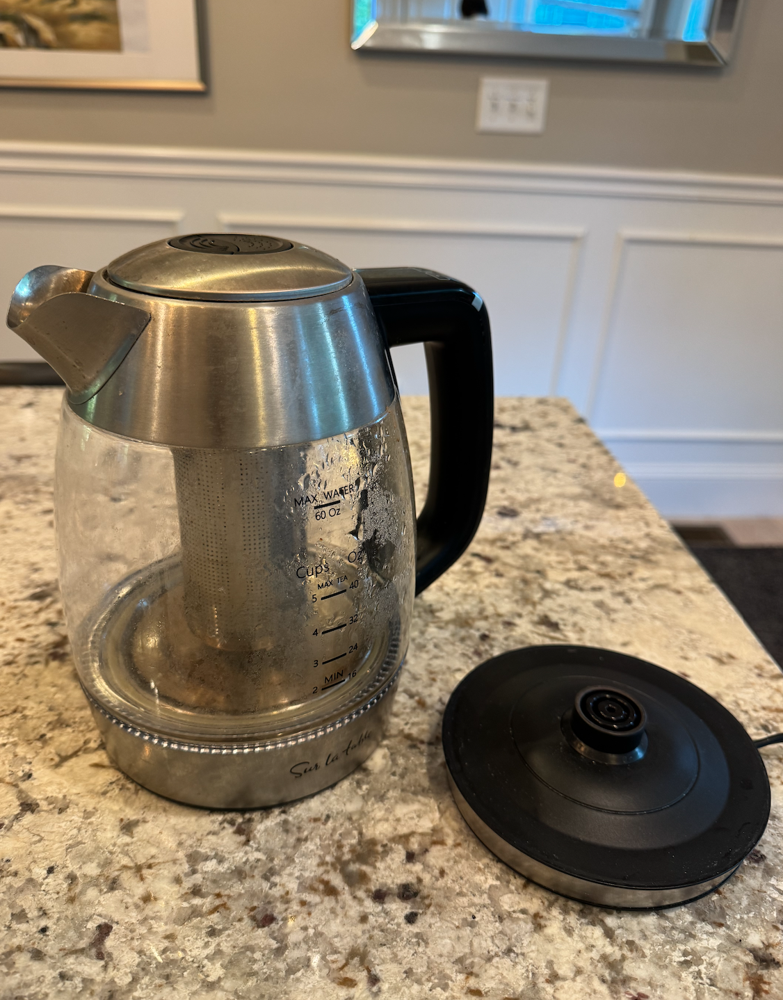 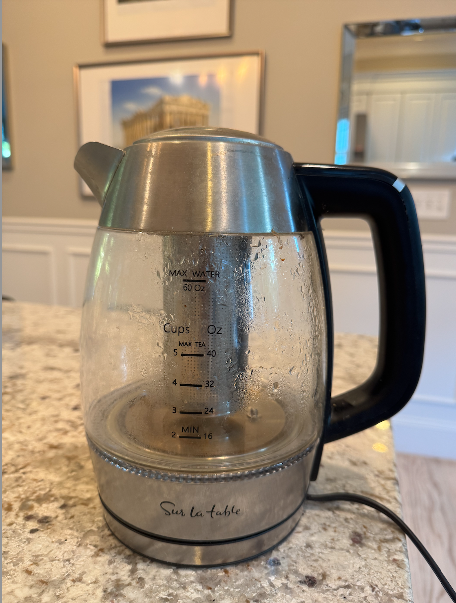 Tea Kettle |
|
|
Design Decision: Pros & Cons
| Object | Design Pros | Design Cons |
|---|---|---|
| Pillow Pet |
|
|
| Apple Watch |
|
|
| Tea Kettle |
|
|
Part 2: Redesign Proposal
Idea Proposal: Spice-Infusing Kettle with Insertable Spice Chips
The redesigned object is a Spice-Infusing Kettle that elevates the chai ritual by blending convenience, personalization, and cultural symbolism. Rather than simply boiling water, this kettle allows users to insert spice tokens that play a key role in making chai into slots. When a button is pushed to boil waiter, it automatically infuses the selected spices and create a personalized chai. A coin-slit mechanism at the top of the kettle allows you to insert any chosen spice tokens, emphasizing the personalization of only choosing tokens that you want used. This reduces the time consuming and tedious nature of having to measure out specific ingredients and filtering the beverage.
Kettle designs originated in the Victorian Era with kettles used to heat large amounts of water, but teakettles serving as a smaller, more decorative object that often had a small oil burner to maintain the heat of the water so that when the water was added to the teapot it was hot. Specific materials of kettle have changed from cast iron, copper, stainless steel, Bakelite plastic, ceramic, and glass, all for different aesthetic and functional purposes. Through the evolution of its design, kettles have always had to contain water without the water escaping through, yet strong enough so that the water pressure does not break the container. Most importantly, it must withstand high temperatures. Environmental analysis has also shown that stainless steel kettles have stronger durability and lower impact than plastic models. Kettles often use alloys like Nichrome to heat liquid and use plastic on lids and handles for insulation.
This fictional object merges multiple functions (boiler + spices + infusion system) into one. The playful interaction of choosing and inserting tokens provokes wonder and customization. Users can gain experiences of personalization, creativity, while staying convenient. However, those who deeply value the labor and hands-on process of traditional chai-making may feel excluded. Real values stay consistent with traditional chai making, like tradition, hospitality, cultural identity, and connection. However, some added real values with the redesign include modernization of a loved ritual and convenience. Fictional values include expression and a more playful magic tone. The aesthetic factor of a sleek and minimal design with traditional Indian pattern accents reinforces function while also inviting conversation about ritual and transformation. The design also has a collection of spice chips with vibrant warm tones that correspond to differing flavor profiles.
This object will be designed for individuals who make chai routinely but want more customization (as opposed to a pre-made spiced mix) and convenience. It will take the form of a modern and sleek kettle body, like electric kettles, with visible coin-slots for spice chips. The stainless-steel top and bottom has traditional patterned motifs, a glass body for viewing, reusable plastic chips, a colored plastic handles and a power button. The purpose is to transform plain water into a warm, individualized spiced chai, while reducing time and effort overall. It emphasizes convenience and tradition coexisting in a ritualistic process. The object will exist primarily in kitchens so it can act as a conversation piece in households.
Reference Images
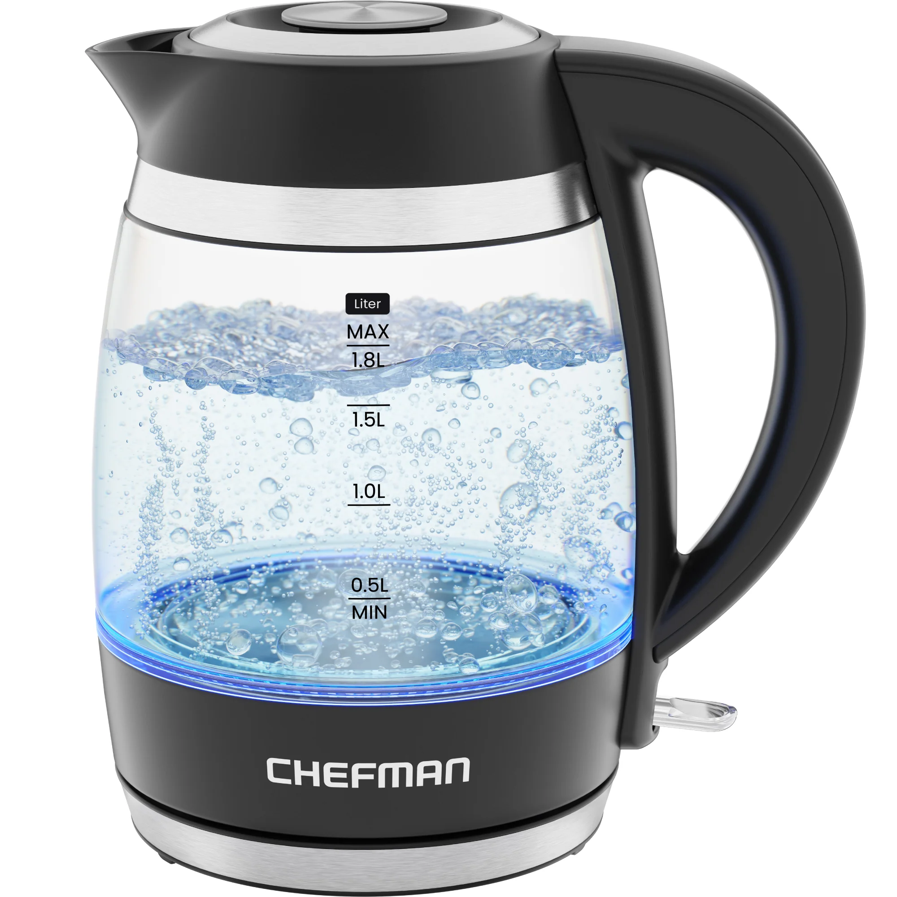
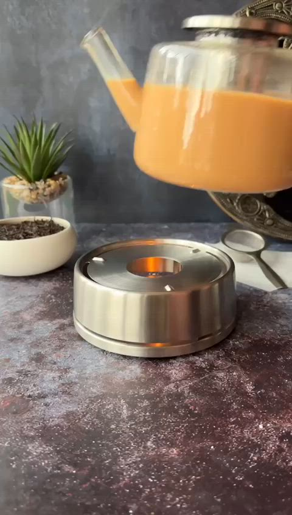
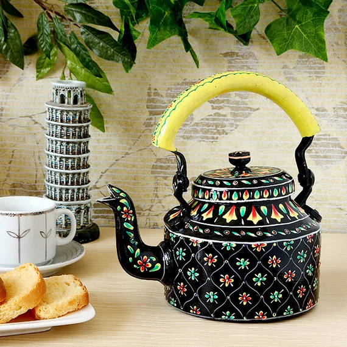
Initial Sketches (No Redisgn and Redesign)


Low Fidelity Paper Prototypes (No Redesign)
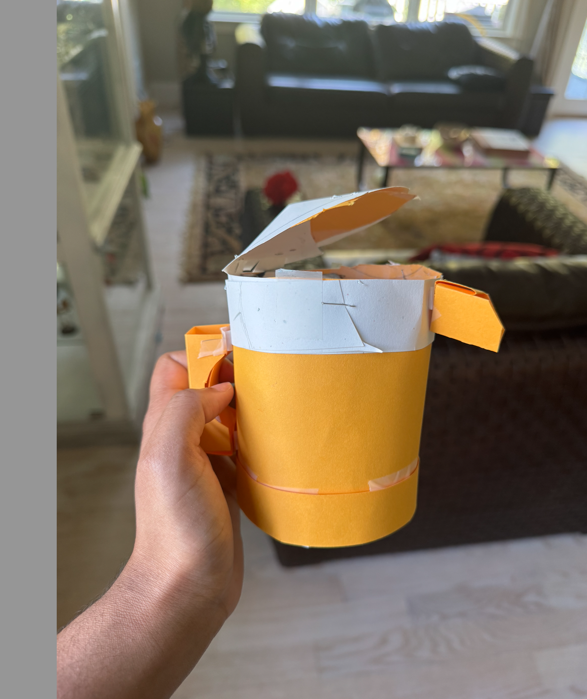
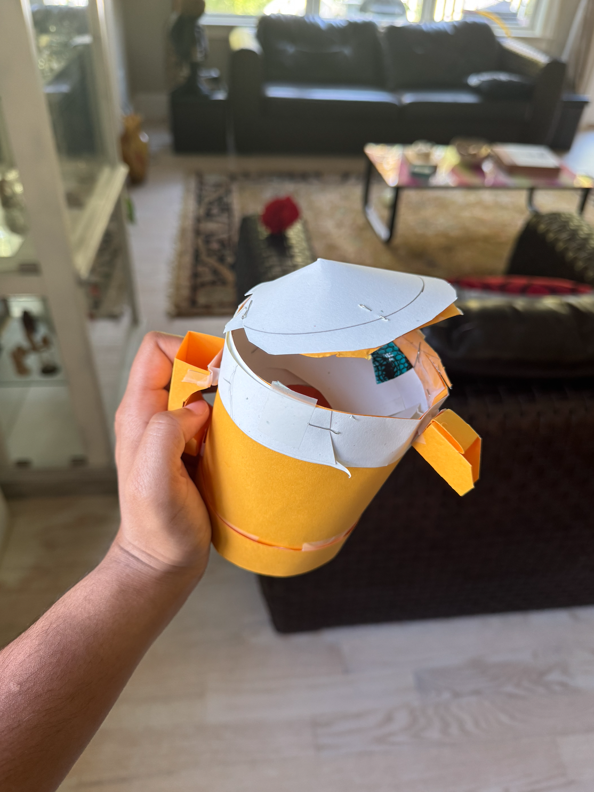
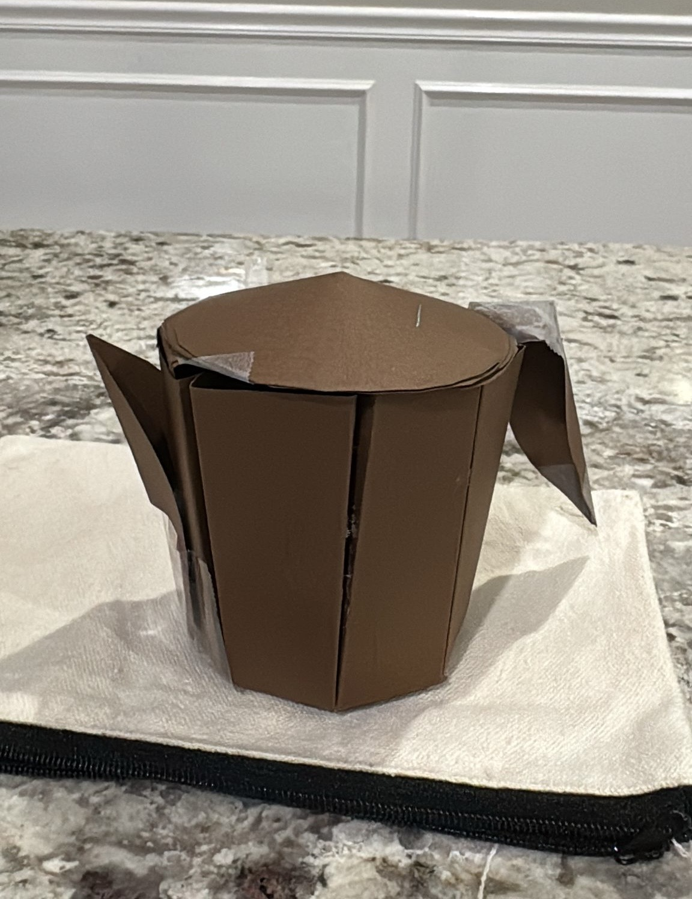
References
- Meech, Christina. (2005). Materials in the design of Kettles. Science Progress, 88, 229–236. https://doi.org/10.3184/003685005783238390
- Gallego Schmid, A., Jeswani, H., Fernandez Mendoza, J. M., & Azapagic, A. (2018). Life cycle environmental evaluation of kettles: Recommendations for the development of eco-design regulations in the European Union. Science of the Total Environment, 625. https://doi.org/10.1016/j.scitotenv.2017.12.262
- Workstory. (n.d.). Kettle manufacturing case study. Retrieved from https://workstory.s3.amazonaws.com/assets/1092469/Kettle_Manufacturing_Case_Study_.pdf
Part 3: Object Attribute Grids
One-Chamber Spice Infusing Kettle
| Audience | Families and individuals who prepare chai as part of a daily ritual but value time saving + convenience |
|---|---|
| Form | Modern kettle design with coin slots to insert spice chips |
| Material | Stainless steel bottom and top with patterned traditional design, glass body for viewing, reusable colored spice plastic chips, plastic colored handle, control button, warm color tones |
| Appeal | Sleek but cultural design, fun customization, convenience of only having to insert chips as spices |
| Purpose | Transforming plain water into a warm personalized spice drink, all while reducing time and effort of making chai |
| Message | Convenience and tradition can coexist in a ritualistic process |
| Location | Kept in kitchen and can be used as a conversation piece over ritual of chai making |
| Usability | Intuitive design where user can insert chips, press a button to boil and get infused tea in a convenient manner |
| Technique | Paper prototype with a cylindrical body (clear plastic sheet), solid bottom top foundation, flap slots at top, and power control button/switch (can push) |
Four-Chamber Spice Infusing Kettle
| Audience | Families or groups of friends who prepare chai together and want to personalize their own flavors while sharing a collective experience. Ideal for social settings where chai-making becomes a bonding activity. |
|---|---|
| Form | Circular kettle body divided into four distinct sections, each with its own spice-chip slot and mini spice-infusion chamber. One spout extends outward, with a ring used to move the spout along to pour. A detachable handle allows the design to be more ergonomic. |
| Material | Combination of styrofoam (lid) for a light and round structure, rigid paper (base) for stability, and clear plastic sheet (body) for transparency. Velcro-attached spice containers allow for easy chip removal. Decorative traditional Indian patterns on the lid and sides for a more cultural touch. |
| Appeal | Visually striking and socially engaging. The four chambers allow for participation from multiple users. The transparent design highlights the brewing process, creating a visual and conversational centerpiece. The decorative accents connect to heritage while maintaining a modern aesthetic through its functionality. |
| Purpose | To reinterpret the act of chai-making as a communal and social ritual of individuality, where each participant can brew their own beverage while sharing a single appliance. |
| Message | The design celebrates how tradition adapts to modern lifestyles by uniting people through a vital shared cultural experience while preserving individual preferences. |
| Location | Centerpiece in the kitchen or dining area. Meant to spark conversation during gatherings or family routines where chai-making is most common. |
| Usability | Each user selects and inserts a spice chip into their respective slot. Once the button is pushed, the kettle simultaneously brews all four chais. Velcro on the spice chamber make assembly and cleaning accessible. The design focuses on functional operation while emphasizing interactivity. |
| Technique | Physical paper prototype with multiple chambers, a removable lid, moveable spout, and detachable handle (to simulate modularity). Used cutting and folding to create various shapes. Prototype focused on testing form and interaction rather than heat functionality. |
Part 4: Design Process
Click on each number to reveal step. Some steps contain sketches and images for reference.
Step 1: Empathize (Iteration 1)
- Understand social and ritualistic process of chai making
- Grasped time consuming and manual labor that is required
- Customization of chai is important!
- Asked family what they think of how they make chai, expressed that a way to reduce time and labor is valuable
People enjoy customizing chai, but still like experience of making it as it provides social value.
Step 2: Define (Iteration 1)
- Design a kettle to preserve cultural experience while offering more modern touches with convenience and personalization
- Key values: personalization, customization, modern, cultural, social connection, accessible, playful, interactive
Step 3: Ideate (Iteration 1)
- Kettle that infuses spices built in → not interactive enough
- Fully digital kettle with app to choose spices → extremely modern for a traditional experience, takes away from social factor
- Spice chip insert kettle → interactive and can be a communal social experience, talking piece in kitchens
- One chamber, insert many types of chips with corresponding spices
- Kettle boils water and automatically infuses with spices
- Chips are reusable
- Preserve "traditional" aspect with Indian patterns and motifs
Step 4: Prototype (Iteration 1)
- One-Chamber Spice-Infusing Kettle
- Purpose: test interaction and form
- Features: insertable chips, removable spice chamber, functioning lid that opens, handle, removable base
- Materials: cardstock paper, clear acrylic sheet, foam chips

Step 5: Test (Iteration 1)
- Showed prototype to multiple friends/family for feedback
- Observed how users interact with product → too many pieces and removable parts
- Overall concept was liked, but could be more "fictional" and playful
- Prototype needs to be higher fidelity because materials were not strong enough (quite flimsly and fragile)
Step 6: Ideate (Iteration 2)
- Make a kettle that can hold multiple drinks at once
- More of a social experience this way
- Keep similar features as prototype 1, but with changes to functionality for better use in the 4-way kettle
Step 7: Prototype (Iteration 2)
- Four-Way Spice-Infusing Kettle
- Purpose: expand on social aspect and improve functionality of object
- Features: one chamber divided into 4, brews 4 custom chais at once with 4 spouts total, traditional patterns added, velcro-attatched chamber for better usability, rigid base and lid with material changes
- Materials: styrofoam lid, clear acrylic sheet, thicker cardstock, foam sheets, patterned/decorative paper

Step 8: Test (Iteration 2)
- 4 spouts with one handle is difficult to pour
- Lid size proportionality is too large
- Chamber is clunky, takes up kettle jug space
- Stronger materials used, more rigid and ergonomic now
Step 9: Prototype (Iteration 3)
- Four-Way Spice-Infusing Kettle
- Purpose: refine interaction and form for coherence and usability
- Features: changeable spout in 4 different places, detachable handle for better control, smaller lid, interactive "boil" button, redesigned spice chips
- Materials: styrofoam lid, clear acrylic sheet, thicker cardstock, foam sheets, patterned/decorative paper

Step 10: Test (Iteration 3)
- Functionality drastically improved
- Glass mechanism could look better (glue can be seen, not very aesthetic)
- Rotating spout functionality isn't super clear to user
- User feedback: social experience is well communicated, kitchen centerpiece, easy of assembly could be improved on
Part 5: Storyboard

Part 6: Final Prototype Considerations and Details
Images
WWWWWH for Final Prototype
- What?
- Futuristic/fictional take on an electric kettle that uses spice chips to allow multiple users (up to 4) to brew a personalized chai beverage in one take
- Designed as a social experience and conversation piece and promotes interactivity and customization
- Grinding spices is replaced with chip insertion, reducing intensive labor and time requirements
- Who?
- Families or friends that prepare chai together
- People that value tradition and cultural connection over a sacred ritual, while also appreciating modern technological aspect
- Busy individuals who make chai daily and strive to save time
- Where?
- Kept in kitchen, dining room or a communal area: locations where conversation and chai-making coexist
- Acts as a functional appliance and a decorative object in these spaces
- When?
- Used during social gatherings with family or groups of people
- Could also be used as part of a daily routine to save time and labor in making chai
- Why?
- Modernizes chai ritual while keeping some aspects of the traditional brewing process alive
- Demonstrates how intuitive design can preserve cultural meaning while embracing innovation and accessibility
- How?
- Constructed from clear acrylic sheets, rigid card stock, styrofoam, patterned paper, and foam sheets
- Uses a rotating spout and detachable handle to pour from any chamber
- Spice chips are inserted through lid and spices are infused from the separate chambers
- Interactive "boil" button for added engagement
Fictional Values Writing for Final Prototype
1. Fundamental
The fundamental value of this kettle helps keep the art of chai-making while solving the challenge of convenience. This redesign mitigates the issue of time and labor costs by allowing multiple chais to brew at once without having to grind any spices or pour any ingredients. It preserves the social and cultural ritual of chai-making, while modernizing certain aspects. It encourages connection and hospitality through its use.
2. Supplemental
The supplemental value of this kettle comes from how it improves the chai-making experience through aesthetic and functional factors. This redesign's rotating spout, detachable handle, and transparent body make the process simple and enjoyable to use, while physical and visual qualities such as patterned motifs and the look of the spice-infusion add pleasure to everyday use. The overall use of the object provides a sensory and emotional experience.
3. Admirable
The admirable value of this kettle stems from its innovative transformation of a sacred cultural ritual dating back centuries. This redesign evokes wonder and curiosity as users can watch multiple chais become infused with spices through a glass viewing body. It sparks conversation as it serves as a kitchen centerpiece and a functional appliance. It represents unity even though the drinks are personalized: four unique beverages, one shared kettle experience.
Concept Statement for Final Prototype
The 4-Way Spice-Infusing Kettle is a redesigned household appliance that reinterprets the chai-making ritual as both a personalized and social experience. Featuring four distinct chambers separated by a central divider, each equipped with its own spice-chip slot, the kettle enables users to brew four unique chai’s simultaneously. Strategic signifiers like coin-slot openings and a prominent boil button afford chip insertion and activation. This design acknowledges individual taste preferences while creating a shared moment around a sacred ritual. The transparent glass body and rigid framework provide feedback to the brewing process, creating a visual centerpiece that encourages conversation and connection. Subtle traditional Indian decorative patterns reference chai’s cultural roots, grounding the product in heritage while embracing modern convenience and technology. By merging functionality, cultural symbolism, and social interaction, the 4-Way Kettle demonstrates how design can adapt traditional practices to more modern lifestyles, by preserving the social essence of chai-making while enhancing accessibility and efficiency through constraints, affordances, and feedback mechanisms.
Recognition of AI Use
Portions of this project made use of AI tools for transcription and organization of notes into clear sentences. No AI assistance was used in the creation of the visual design, artwork, or conceptual development; all creative decisions and outputs are entirely original.